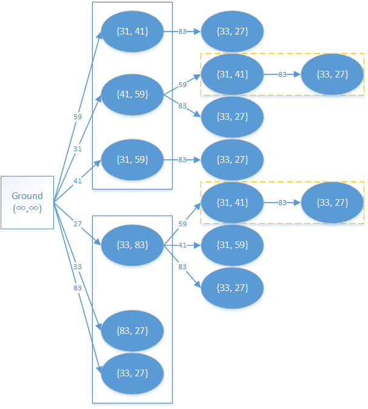

OI Wiki · prijevod · Dinamičko programiranjeOI Wiki · translation · Dynamic programming
DP na DAG-uDP on a DAG
Definicija
DAG je usmjereni aciklički graf. Binarne relacije u mnogim praktičnim problemima mogu se modelirati DAG-om, čime se ti problemi svode na problem najduljeg (najkraćeg) puta u DAG-u.
Objašnjenje
Na primjeru sljedećeg zadatka analizirajmo postupak modeliranja DAG-om.
Primjer UVa 437 Babilonska kula – The Tower of Babylon
Zadano je \(n (n\leqslant 30)\) vrsta blokova, za svaku su poznate tri duljine bridova, a svake vrste ima beskonačno mnogo. Treba odabrati neke kvadre i složiti ih u što viši toranj (svaki blok može odabrati bilo koji brid kao visinu), tako da su duljina i širina baze svakog bloka strogo manje od duljine i širine baze bloka pod njim. Odredi najveću visinu tornja.
Postupak
Izgradnja DAG-a
Budući da duljina i širina baze svakog bloka moraju biti strogo manje od duljine i širine baze bloka pod njim, nije teško taj odnos uzeti kao temelj za izgradnju grafa, čime se zadatak svodi na problem najduljeg puta.
Drugim riječima, ako se blok \(j\) može postaviti na blok \(i\), između \(i\) i \(j\) postoji brid \((i, j)\), a težina brida je visina koju je blok \(j\) odabrao.
Druga je poteškoća u ovom zadatku to što visina svakog bloka može biti odabrana na tri načina; kako onda prikladno izgraditi graf?
Svaki blok rastavimo na tri načina slaganja, tj. jedan blok rastavimo na tri bloka, pri čemu svaki od dobivenih blokova uzima drugu visinu.
Početna je točka tlo, čija je baza beskonačno velika, pa je iz tla dostižan svaki blok; pri pisanju programa, naravno, ne moramo posebno zapisivati beskonačnost.
Pretpostavimo da imamo dva bloka s bridovima \(31, 41, 59\) odnosno \(33, 83, 27\); tada cijeli DAG izgleda kao na slici dolje.

Plavi puni okvir na slici označava skupinu blokova dobivenih rastavljanjem jednog bloka; duljine bridova baze pišemo u \(\{\}\) zato što, nakon što blok odabere visinu, bridovi baze više nemaju poredak.
Žuti iscrtkani okvir označava dio koji se računa više puta; ponavljanje računanja može se izbjeći memoiziranim pretraživanjem.
Prijelaz
Zadatak traži najveću visinu tornja, a to smo već sveli na problem najduljeg puta; početak je, kako je rečeno, tlo, a kraj? Očito je kraj prirodno određen: to je trenutak kad se na neki blok više ne može postaviti nijedan drugi.
Razmotrimo sada jednadžbu prijelaza.
Neka \(d(i,r)\) označava najveću visinu kad je blok \(i\) na dnu i složen je na \(r\)-ti način. Tada vrijedi sljedeća jednadžba prijelaza:
Ovdje \(j\) prolazi po svim blokovima koji se mogu staviti na blok \(i\) složen na način \(r\), \(r'\) je odgovarajući način slaganja bloka \(j\), a \(h\) je visina bloka \(i\) pri slaganju na \(r\)-ti način.
Implementacija
#include <cmath>
#include <cstring>
#include <iostream>
using namespace std;
constexpr int MAXN = 30 + 5;
constexpr int MAXV = 500 + 5;
int d[MAXN][3];
int x[MAXN], y[MAXN], z[MAXN];
int babylon_sub(int c, int rot, int n) {
if (d[c][rot] != -1) {
return d[c][rot];
}
d[c][rot] = 0;
int base1, base2;
if (rot == 0) { // obradi tri orijentacije
base1 = x[c];
base2 = y[c];
}
if (rot == 1) {
base1 = y[c];
base2 = z[c];
}
if (rot == 2) {
base1 = x[c];
base2 = z[c];
}
for (int i = 0; i < n; i++) { // ovisno o uvjetu pozovi odgovarajuću rekurziju
if ((x[i] < base1 && y[i] < base2) || (y[i] < base1 && x[i] < base2))
d[c][rot] = max(d[c][rot], babylon_sub(i, 0, n) + z[i]);
if ((y[i] < base1 && z[i] < base2) || (z[i] < base1 && y[i] < base2))
d[c][rot] = max(d[c][rot], babylon_sub(i, 1, n) + x[i]);
if ((x[i] < base1 && z[i] < base2) || (z[i] < base1 && x[i] < base2))
d[c][rot] = max(d[c][rot], babylon_sub(i, 2, n) + y[i]);
}
return d[c][rot];
}
int babylon(int n) {
for (int i = 0; i < n; i++) {
d[i][0] = -1;
d[i][1] = -1;
d[i][2] = -1;
}
int r = 0;
for (int i = 0; i < n; i++) { // tri načina postavljanja
r = max(r, babylon_sub(i, 0, n) + z[i]);
r = max(r, babylon_sub(i, 1, n) + x[i]);
r = max(r, babylon_sub(i, 2, n) + y[i]);
}
return r;
}
int main() {
int t = 0;
while (true) { // beskonačna petlja koja računa odgovore
int n;
cin >> n;
if (n == 0) break; // nema više blokova, stani
t++;
for (int i = 0; i < n; i++) {
cin >> x[i] >> y[i] >> z[i];
}
cout << "Case " << t << ":"
<< " maximum height = " << babylon(n); // rekurzija
cout << endl;
}
return 0;
}
Definition
A DAG is a directed acyclic graph. Binary relations in many practical problems can be modeled with a DAG, which turns these problems into longest (shortest) path problems on a DAG.
Explanation
Let us analyze the process of DAG modeling using the following problem as an example.
Example UVa 437 The Tower of Babylon
There are \(n (n\leqslant 30)\) types of blocks; the three edge lengths of each type are known and there are infinitely many blocks of each type. Choose some blocks and stack them into a tower that is as tall as possible (each block may choose any of its edges as its height), such that the length and width of the base of every block are strictly smaller than the length and width of the base of the block below it. Find the maximum height of the tower.
Procedure
Building the DAG
Since the length and width of the base of every block must be strictly smaller than those of the block below it, it is natural to use this relation as the basis for building the graph, and the problem turns into a longest path problem.
That is, if block \(j\) can be placed on block \(i\), there is an edge \((i, j)\) between \(i\) and \(j\), and the edge weight is the height chosen for block \(j\).
Another issue in this problem is that each block has three choices of height; how should the graph be built?
We may split every block into three stacking orientations, i.e. decompose one block into three blocks, each of the resulting blocks choosing a different height.
The initial starting point is the ground, whose base is infinitely large, so every block is reachable from the ground; of course, when writing the program we do not need to write out infinity explicitly.
Suppose there are two blocks with edges \(31, 41, 59\) and \(33, 83, 27\) respectively; then the whole DAG looks like the figure below.
The solid blue box in the figure marks the group of blocks obtained by splitting one block; the base edge lengths are written with \(\{\}\) because once a block has chosen its height, the base edges are unordered.
The dashed yellow box marks the part that is computed repeatedly; this repeated computation can be avoided with memoized search.
Transition
The problem asks for the maximum height of the tower, which has already been turned into a longest path problem. The starting point, as said above, is the ground; what about the end point? Clearly the end point is determined naturally: it is when no other block can be placed on top of some block.
Now let us consider the transition equation.
Let \(d(i,r)\) denote the maximum height when block \(i\) is at the bottom and is stacked in orientation \(r\). Then we have the following transition equation:
Here \(j\) ranges over all blocks that can be placed on block \(i\) stacked in orientation \(r\), \(r'\) is the corresponding orientation of \(j\), and \(h\) is the height of block \(i\) in orientation \(r\).
Implementation
#include <cmath>
#include <cstring>
#include <iostream>
using namespace std;
constexpr int MAXN = 30 + 5;
constexpr int MAXV = 500 + 5;
int d[MAXN][3];
int x[MAXN], y[MAXN], z[MAXN];
int babylon_sub(int c, int rot, int n) {
if (d[c][rot] != -1) {
return d[c][rot];
}
d[c][rot] = 0;
int base1, base2;
if (rot == 0) { // handle the three orientations
base1 = x[c];
base2 = y[c];
}
if (rot == 1) {
base1 = y[c];
base2 = z[c];
}
if (rot == 2) {
base1 = x[c];
base2 = z[c];
}
for (int i = 0; i < n; i++) { // call the appropriate recursion depending on the condition
if ((x[i] < base1 && y[i] < base2) || (y[i] < base1 && x[i] < base2))
d[c][rot] = max(d[c][rot], babylon_sub(i, 0, n) + z[i]);
if ((y[i] < base1 && z[i] < base2) || (z[i] < base1 && y[i] < base2))
d[c][rot] = max(d[c][rot], babylon_sub(i, 1, n) + x[i]);
if ((x[i] < base1 && z[i] < base2) || (z[i] < base1 && x[i] < base2))
d[c][rot] = max(d[c][rot], babylon_sub(i, 2, n) + y[i]);
}
return d[c][rot];
}
int babylon(int n) {
for (int i = 0; i < n; i++) {
d[i][0] = -1;
d[i][1] = -1;
d[i][2] = -1;
}
int r = 0;
for (int i = 0; i < n; i++) { // three ways of placing
r = max(r, babylon_sub(i, 0, n) + z[i]);
r = max(r, babylon_sub(i, 1, n) + x[i]);
r = max(r, babylon_sub(i, 2, n) + y[i]);
}
return r;
}
int main() {
int t = 0;
while (true) { // infinite loop computing the answers
int n;
cin >> n;
if (n == 0) break; // no more blocks, stop
t++;
for (int i = 0; i < n; i++) {
cin >> x[i] >> y[i] >> z[i];
}
cout << "Case " << t << ":"
<< " maximum height = " << babylon(n); // recursion
cout << endl;
}
return 0;
}